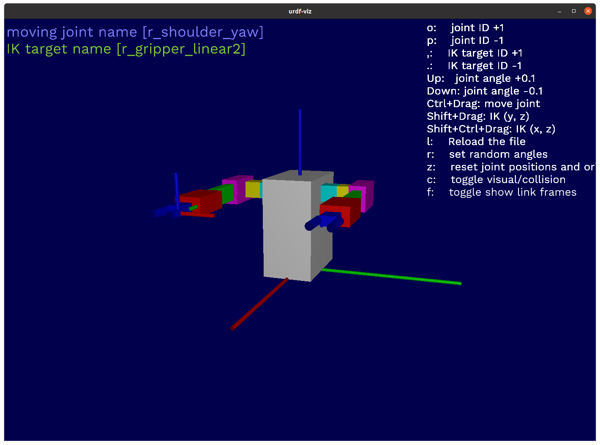

Operating robot from CLI
Move the robot arm
From the command text file
もしOpenRRをクローンしていなければ以下を実行してください。
git clone https://github.com:openrr/openrr
cd openrr
サンプルのロボットアームを表示してみましょう。
urdf-viz ./openrr-planner/sample.urdf &

load_commandsをtxtファイルに記したコマンドを実行するのに用いることができます。以下のコマンドを実行してみましょう。
openrr_apps_robot_command \
--config-path ./openrr-apps/config/sample_robot_client_config_for_urdf_viz.toml \
load_commands ./openrr-apps/command/sample_cmd_urdf_viz.txt
最後に以下のように出力されれば成功です。
PrintSpeaker: "This is sample robot"
From your command line
load_commandsを用いずに直接コマンドを書くことでも実行できます。試しにロボットアームの状態を取得してみましょう。
openrr_apps_robot_command \
--config-path ./openrr-apps/config/sample_robot_client_config_for_urdf_viz.toml \
get_state l_arm
以下のように出力されるでしょう。
Joint names : ["l_shoulder_yaw", "l_shoulder_pitch", "l_shoulder_roll", "l_elbow_pitch", "l_wrist_yaw", "l_wrist_pitch"]
Joint positions : [0.0, 0.0, 0.0, 0.0, 0.0, 0.0]
関節角を送信してみます。
openrr_apps_robot_command \
--config-path ./openrr-apps/config/sample_robot_client_config_for_urdf_viz.toml \
send_joints l_arm -j 0=1.2 -j 1=-1.2 -j 2=0.0 -j 3=1.2 -j 4=0.0 -j 5=0.0
ロボットアームが動きましたね。
Robot client config file
これは単一ロボットアーム用のconfig fileの例です。シミュレータであっても実機であってもこのように記しておくことでOpenRRから操作ができます。
ただし、urdf-vizの項目である、[urdf_viz_clients_configs]だけROSやそれに類するもののために変更する必要があります。
[[urdf_viz_clients_configs]]
name = "arm"
joint_names = [
"shoulder_yaw",
"shoulder_pitch",
"shoulder_roll",
"elbow_pitch",
"wrist_yaw",
"wrist_pitch",
]
wrap_with_joint_position_limiter = true
# If joint_position_limits is not specified, limits will be got from URDF.
# The following values are the same as if getting limits from URDF.
joint_position_limits = [
{ lower = -3.0, upper = 3.0 },
{ lower = -2.0, upper = 1.5 },
{ lower = -1.5, upper = 2.0 },
{ lower = -2.0, upper = 1.5 },
{ lower = -3.0, upper = 3.0 },
{ lower = -2.0, upper = 2.0 },
]
[openrr_clients_config]
urdf_path = "{path_to_urdf}/sample.urdf"
self_collision_check_pairs = ["shoulder_yaw:gripper_linear1"]
# Client config for left arm
[[openrr_clients_config.collision_check_clients_configs]]
name = "arm_collision_checked"
client_name = "arm"
[[openrr_clients_config.ik_clients_configs]]
name = "arm_ik"
client_name = "arm_collision_checked"
solver_name = "arm_ik_solver"
[[openrr_clients_config.joints_poses]]
pose_name = "zero"
client_name = "arm_collision_checked"
positions = [0.0, 0.0, 0.0, 0.0, 0.0, 0.0]
[openrr_clients_config.ik_solvers_configs.l_arm_ik_solver]
ik_target = "tool_fixed"